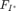
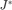
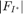
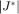
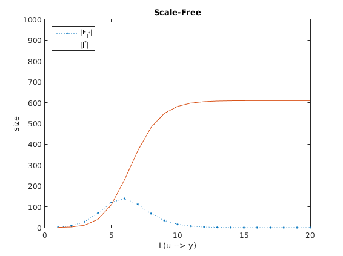
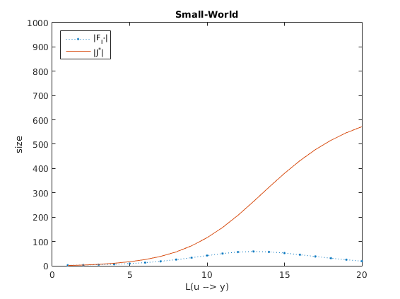
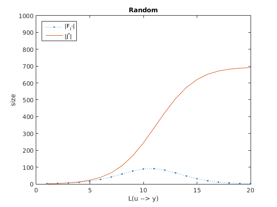

DISTRIBUTED CONTROL
This code generates scale-free, small-world and random networks; for each network we compute the average size of  and  for different distances between local controller and furthest outputs.
Contents
Initialization
addpath('Daan') % adding path to Daan's Generative Models clc close all clear all n = 1000; GRAPH_TYPES = {'Scale-Free' 'Small-World' 'Random'}; plot_count = 0; PROB = 0.5; % The probability of choosing a in- or out-edge for g = 1 : size(GRAPH_TYPES,2)
Generating the Directed Network
W = generate_network(n, GRAPH_TYPES{g});
deg = sum(W,2); % undirected degrees computation
for i = 1 : n
for j = i+1 : n
if deg(i) > deg(j)
if rand < PROB; W(i,j) = 0; % hubs --> smaller nodes
else W(j,i) = 0; end
else
if rand < PROB; W(j,i) = 0; % hubs <-- smaller nodes
else W(i,j) = 0; end
end
end
end
for i = 1 : n
if sum(sum(W(i,:))) > 0
W(i,:) = W(i,:) / sum(W(i,:));
W(i,i) = 0;
end
end
Computing the and .
[I,J] = estimate_ij_star(W, false);
Visualization
In following figures  denotes the number of sensors needed and  denotes the number of nodes which are located withing the local network and should be isolated from disturbances.
figure
plot(I,'.:')
hold on
plot(J)
legend('|F_{I^*}|','|J^*|','Location','NorthWest')
xlabel('L(u --> y)')
ylabel('size')
ylim([0,n])
title([GRAPH_TYPES{g}])
   end